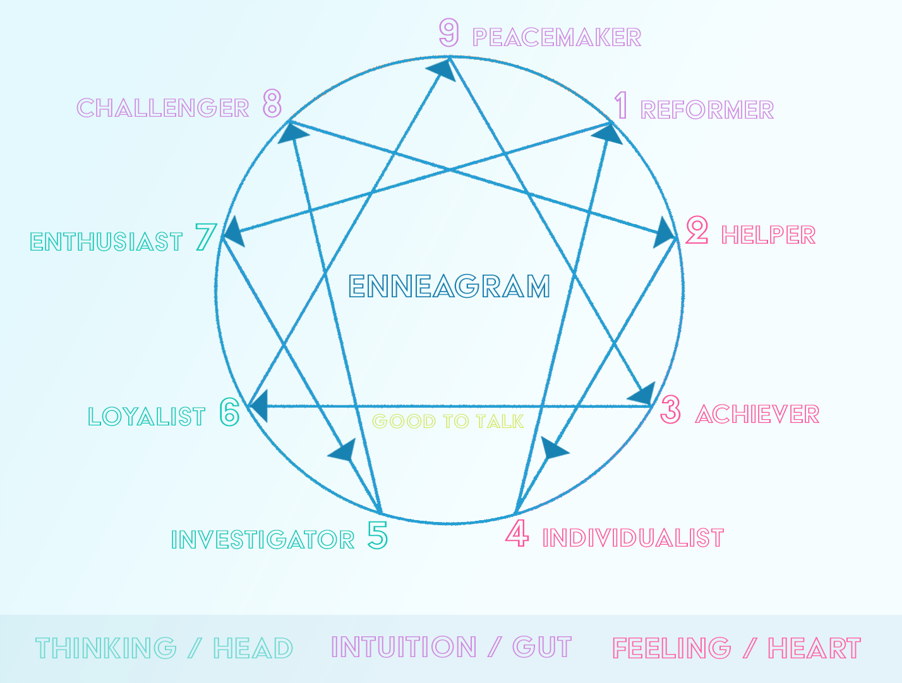

GOOD TO TALKS
ENNEAGRAM

Season Four Enneagram Series
Season One Enneagram Series
Enneagram Test
This is a link to an Enneagram Test that we like. Don't worry, you don't really have to fill out all that demographic information at the top. Your results will be displayed in the page at the end of your test, not emailed to you. It might take you about 20 minutes to complete, so plan accordingly.
This is a link to an Enneagram Test that we like. Don't worry, you don't really have to fill out all that demographic information at the top. Your results will be displayed in the page at the end of your test, not emailed to you. It might take you about 20 minutes to complete, so plan accordingly.
Type 2
The Helper, The Pleaser, “The Need To Be Needed”
Examples: St. John, Mother Theresa, Michelle Obama, Eleanor Roosevelt, Peter Parker/Spider-Man (Marvel), Elastigirl (The Incredibles) The Giving Tree
Basic Fear: Of being unloved and unwanted for themselves alone.
Basic Desire: To feel loved
Superego Message: “You are good or okay if you are loved by others and are close to them.”
Under Stress: 8
Towards Integration: 4
Riso-Hudson: The Caring, Interpersonal Type: Generous, Demonstrative, People-pleasing and Possessive
Type 3
The Achiever, The Best, “The Need To Succeed”
Examples: King David, Jacob/Israel, Bill Clinton, Oprah, Steven Colbert, Rachel (Friends), Jamie Lannister (GOT), Wonder Woman (DC), Daenerys Targaryen (GOT), Tony Stark/Iron Man (Marvel)
Basic Fear: Of being worthless, without value apart from their achievements
Basic Desire: To feel worthwhile, accepted and desirable
Superego Message: “You are good or okay as long as you are successful and others think well of you."
Under Stress: 9
Towards Integration: 6
Riso-Hudson: The Success-oriented, Pragmatic Type, Adaptable, Excelling, Driven and Image-conscious
Type 4
The Individualist, The Romantic, “The Need To Be Special”
Examples: The Prophet Jeremiah, Soren Kierkegaard, Bob Dylan, Marilyn Monroe, Phoebe (Friends), Scarlet Witch (Marvel)
Basic Fear: Of having no identity, no personal significance
Basic Desire: To find themselves and their significance, to create an identity out of their inner experience
Superego Message: “You are good or okay if you are true to yourself.”
Under Stress: 2
Towards Integration: 1
Riso-Hudson: The Sensitive, Withdrawn Type: Expressive, Dramatic, Self-absorbed and temperamental
Type 5
The Investigator, The Thinker, “The Need To Perceive”
Examples: St. Thomas Aquinas, Bill Gates, Albert Einstein, Tyrion Lannister (GOT), Sherlock Holmes, Ross (Friends), Bruce Banner/Hulk, Dr. Strange (Marvel), Batman (DC)
Basic Fear: Of being helpless, useless, incapable and overwhelmed
Basic Desire: To be capable and competent
Superego Message: “You are good or okay if you have mastered something.”
Under Stress: 7
Towards Integration: 8
Riso-Hudson: The Intense, Cerebral Type: Perceptive, Innovative, Secretive and Isolated
Type 6
The Loyalist, The Loyal-Skeptic, The Doubter, “The Need For Security”
Examples: St. Peter, Tom Hanks, Jay Leno, RFK, Bruce Springsteen, Charlie Brown, Black Panther (Marvel), Chandler (Friends), Rey (Star Wars), Sam (LOTR), Chewbacca (Star Wars)
Basic Fear: Of having no support or guidance, of being unable to survive on their own
Basic Desire: To find security and support
Superego Message: “You are good or okay if you do what’s expected of you.”
Under Stress: 3
Towards Integration: 9
Riso-Hudson: The Committed, Security-oriented type: Engaging, Responsible, Anxious and Suspicious
Type 7
The Adventurer, The Enthusiast, “The Need To Avoid Pain”
Examples: King Solomon, Mozart, JFK, Scarlett O’Hara, Ben Franklin, Oberyn Martell (GOT), Joey (Friends), Tigger (Winnie the Pooh), Thor, Indiana Jones
Basic Fear: Of being deprived and trapped in pain
Basic Desire: To be happy, satisfied, to find fulfillment
Superego Message: “You are good or okay if you get what you need.”
Under Stress: 1
Towards Integration: 5
Riso-Hudson: The Busy, Fun-Loving Type: Spontaneous, Versatile, Acquisitive and Scattered
Type 8
The Challenger, The Leader, “The Need To Be Against”
Examples: Deborah, Samson, Ernest Hemingway, Frank Sinatra, Martin Luther King Jr., Andrew Jackson, Han Solo (Star Wars), Black Widow (Marvel), Wolverine (Marvel) Will Hunting (Good Will Hunting)
Basic Fear: Of being harmed or controlled by others, of violation
Basic Desire: To protect themselves, to determine their own course in life
Superego Message: “You are good or okay if you are strong and in control of your situation.”
Under Stress: 5
Towards Integration: 2
Riso-Hudson: The Powerful, Dominating Type: Self-Confident, Decisive, Willful and Confrontational
Type 9
The Peacemaker, The Healer, “The Need To Avoid”
Examples: Jonah, Abe Lincoln, Carl Jung, Barack Obama, Queen Elizabeth II, Walt Disney, Aragorn, Luke (Star Wars), Falcon (Marvel)
Basic Fear: Of loss and separation of annihilation
Basic Desire: To maintain their inner stability and peace of mind.
Superego Message: “You are good or okay as long as those around you are good or okay.”
Under Stress: 6
Towards Integration: 3
Riso-Hudson: The Easygoing, Self-Effacing Type: Receptive, Reassuring, Agreeable and Complacent
Type 1
The Reformer, The Perfectionist “The Need To Be Perfect”
Examples: St. Paul, Martin Luther, Plato, Gandhi, Al Gore, Lisa (the Simpsons), Monica (Friends), Obi Wan Kenobi (Star Wars), Ned Stark (GOT), Captain America, Superman/Clark Kent
Basic Fear: Of being bad, evil, defective or corrupt.
Basic Desire: To be good, virtuous, in balance and to have integrity.
Superego Message: “You are good or okay if you do what is right.”
Under Stress: 4
Towards Integration: 7
Riso-Hudson: “The Rational, Idealistic Type: Principled, Purposeful, Self-controlled and Perfectionistic


© 2022 Good to Talks | All Rights Reserved